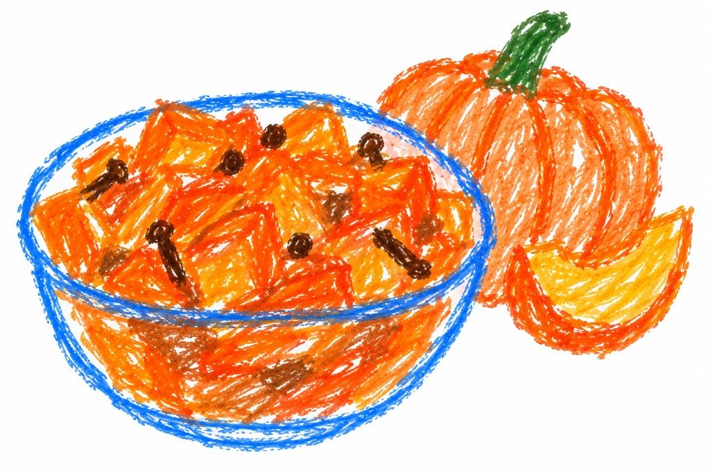

#mamma
Mostarda di zucca
Ricetta d'autunno.
Ingredienti
- 1 kg di buccia di zucca
- 2 mele renette o poco dolci
- 400 g di zucchero
- 5 o 6 chiodi di garofano
- 1 bastoncino di cannella o cannella in polvere
- 3 cucchiaini di senape
- 300 g di miele
Preparazione
Tagliare a pezzetti le bucce di zucca e le mele a dadini.
In una pentola inserire tutti gli ingredienti, portare a bollore il composto e rimestare di continuo fino a quando non si vedranno le bucce di zucca e le mele sciogliersi.
Se avete inserito la cannella in stecca, toglietela e passate il composto nel passaverdura o nel minipimer.
← Torna alle ricette